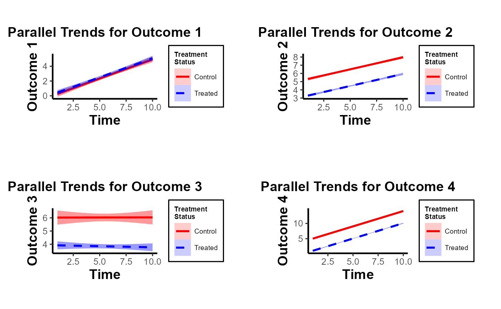
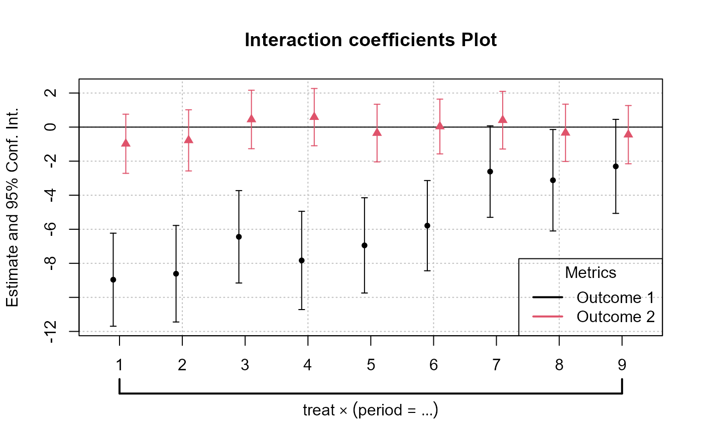
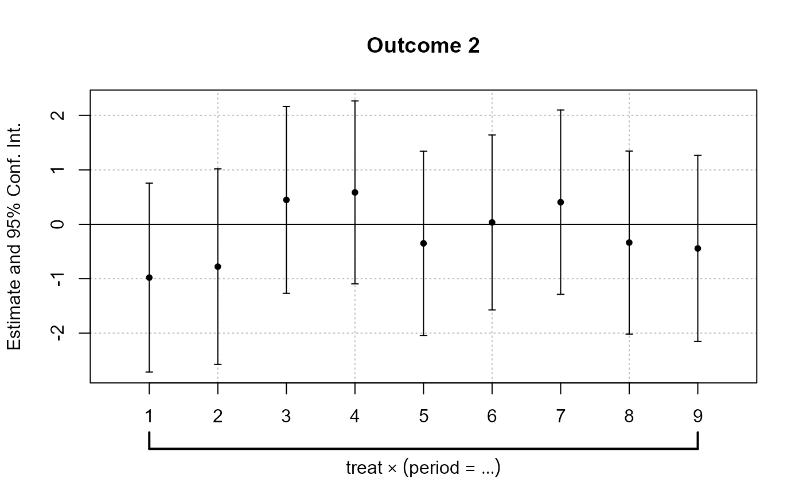
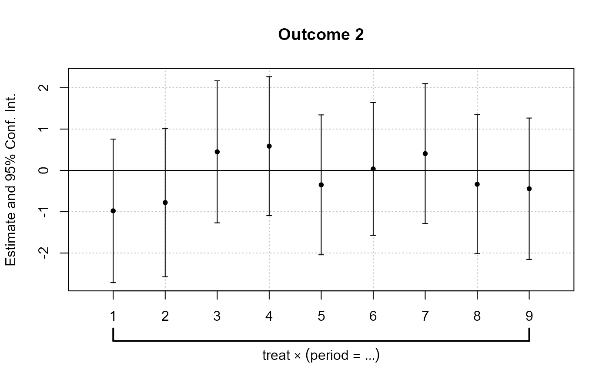
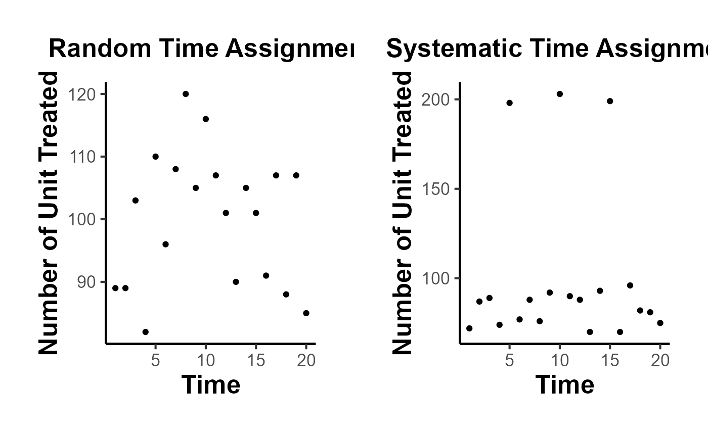
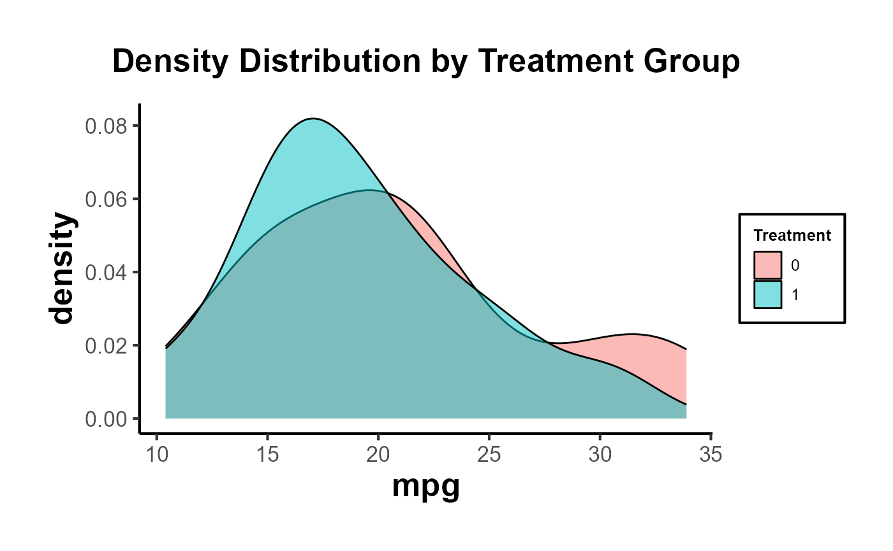
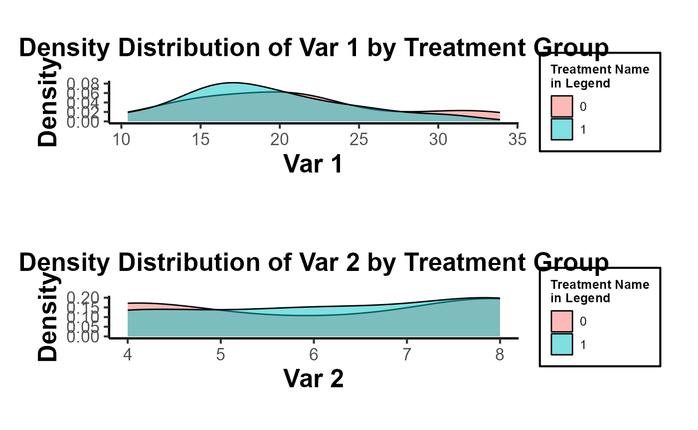

2. Difference-in-Differences
Mike Nguyen
2023-08-25
02_did.Rmd
library(causalverse)Assumptions
Pre-treatment Parallel Trends
plot_par_trends
The plot_par_trends function is designed to assist
researchers and analysts in visualizing parallel trends in longitudinal
datasets, particularly for datasets with treatment and control groups.
This tool makes it easy to visualize changes over time for various
outcome metrics between the groups.
Data Structure
For optimal use of plot_par_trends, ensure your data is
structured in the following manner:
-
entity: A unique identifier for each observation (e.g., individuals, companies). -
time: The time period for the observation. - Treatment status column: Distinguishing treated observations from controls.
- Metric columns: Capturing the outcome measures of interest.
Sample Data Generation
For demonstration purposes, we can generate some illustrative data:
library(tidyverse)
#> ── Attaching core tidyverse packages ──────────────────────── tidyverse 2.0.0 ──
#> ✔ dplyr 1.1.2 ✔ readr 2.1.4
#> ✔ forcats 1.0.0 ✔ stringr 1.5.0
#> ✔ ggplot2 3.4.3 ✔ tibble 3.2.1
#> ✔ lubridate 1.9.2 ✔ tidyr 1.3.0
#> ✔ purrr 1.0.2
#> ── Conflicts ────────────────────────────────────────── tidyverse_conflicts() ──
#> ✖ dplyr::filter() masks stats::filter()
#> ✖ dplyr::lag() masks stats::lag()
#> ℹ Use the conflicted package (<http://conflicted.r-lib.org/>) to force all conflicts to become errors
data <- expand.grid(entity = 1:100, time = 1:10) %>%
dplyr::arrange(entity, time) %>%
dplyr::mutate(
treatment = ifelse(entity <= 50, "Treated", "Control"),
outcome1 = 0.5 * time + rnorm(n(), 0, 2) + ifelse(treatment == "Treated", 0, 0),
outcome2 = 3 + 0.3 * time + rnorm(n(), 0, 1) + ifelse(treatment == "Treated", 0, 2),
outcome3 = 3 + 0.5 * time * rnorm(n(), 0, 1) + rexp(n(), rate = 1) + ifelse(treatment == "Treated", 0, 2),
outcome4 = time + rnorm(n(), 0, 1) + ifelse(treatment == "Treated", 0, 2) * 2
)Visualizing Trends with plot_par_trends Invoke the
plot_par_trends function using the sample data:
results <- plot_par_trends(
data = data,
metrics_and_names = list(outcome1 = "Outcome 1", outcome2 = "Outcome 2", outcome3 = "Outcome 3", outcome4 = "Outcome 4"),
treatment_status_var = "treatment",
time_var = list(time = "Time"),
smoothing_method = "glm",
theme_use = causalverse::ama_theme(base_size = 12)
# title_prefix = "Para Trends"
)Note: This custom function is built based on the
geom_smooth function from ggplot2. Therefore, it supports
most of the smoothing methods you’d find in ggplot2, such as
lm, glm, loess, etc.
The function returns a list of ggplot objects, which can be
visualized using tools like gridExtra
library(gridExtra)
#>
#> Attaching package: 'gridExtra'
#> The following object is masked from 'package:dplyr':
#>
#> combine
gridExtra::grid.arrange(grobs = results, ncol = 2)
Note of Caution: When using this custom package, it’s crucial to carefully examine parallel trends plots both with and without control variables. At times, one might observe suitable parallel trends without control variables. However, when these control variables are introduced, the underlying assumptions can be disturbed. Conversely, there are cases where the general parallel trends assumption doesn’t seem to be in place, but when conditioned on the control variables, the trends align perfectly. This package provides functions that allow users to easily generate these plots side by side, especially after formulating the predicted values of dependent variables by accounting for control variables. Always approach these plots with a discerning eye to ensure accurate interpretation and application.
In this demonstration, I’ve incorporated the use of the smoothing function to illustrate its potential application. It’s imperative, however, to approach this function with prudence. Although the smoothing function can be invaluable in revealing underlying trends in specific scenarios, its application carries inherent risks. One such risk is the inadvertent or intentional misrepresentation of data, leading observers to falsely deduce the presence of parallel trends where they might not exist. This can potentially skew interpretations and lead to incorrect conclusions.
Given these concerns, if you’re inclined to utilize the smoothing function, it’s paramount to also consider the implications and insights from our secondary plot. This subsequent visualization offers a more granular and statistically sound perspective, specifically focusing on the pre-treatment disparities between the treated and control groups. It serves as a vital counterbalance, ensuring that any trend interpretations are grounded in robust statistical analysis.
plot_coef_par_trends
Arguments
-
data: A data frame containing the data to be used in the model. -
dependent_vars: A named list of dependent variables to model along with their respective labels. -
time_var: The name of the time variable in the data. - (similarly, describe other arguments…)
Output
The function returns a plot or a list of plots visualizing interaction coefficients based on user specifications.
library(fixest)
data("base_did")
# Combined Plot
combined_plot <- plot_coef_par_trends(
data = base_did,
dependent_vars = c(y = "Outcome 1", x1 = "Outcome 2"),
time_var = "period",
unit_treatment_status = "treat",
unit_id_var = "id",
plot_type = "coefplot",
combined_plot = TRUE,
plot_args = list(main = "Interaction coefficients Plot"),
legend_title = "Metrics",
legend_position = "bottomright"
)
#> Notes from the estimations:
#> [x 2] The variable 'period::10:treat' has been removed because of collinearity (see $collin.var).
# Individual Plots
indi_plots <- plot_coef_par_trends(
data = base_did,
dependent_vars = c(y = "Outcome 1", x1 = "Outcome 2"),
time_var = "period",
unit_treatment_status = "treat",
unit_id_var = "id",
plot_type = "coefplot",
combined_plot = FALSE
)
#> The variable 'period::10:treat' has been removed because of collinearity (see $collin.var).
#> The variable 'period::10:treat' has been removed because of collinearity (see $collin.var). 

Random Treatment Assignments
In Difference-in-Differences analysis, ensuring randomness in treatment assignment is crucial. This randomization comes in two main levels: random time assignment and random unit assignment.
-
Definition: This pertains to when (in time) a treatment or intervention is introduced, not to which units it’s introduced.
Importance in Staggered DiD or Rollout Design: If certain periods are predisposed to receiving treatment (e.g., economic booms or downturns), then the estimated treatment effect can get confounded with these period-specific shocks. A truly random time assignment ensures that the treatment’s introduction isn’t systematically related to other time-specific factors.
Example: Suppose there’s a policy aimed at improving infrastructure. If this policy tends to get introduced during economic booms because that’s when governments have surplus funds, then it’s challenging to disentangle the effects of the booming economy from the effects of the infrastructure policy. A random time assignment would ensure the policy’s introduction isn’t tied to the state of the economy.
-
Definition: This pertains to which units (like individuals, firms, or regions) are chosen to receive the treatment.
Example: Using the same infrastructure policy, if it is always introduced in wealthier regions first, then the effects of regional affluence can get confounded with the policy effects. Random unit assignment ensures the policy isn’t systematically introduced to certain kinds of regions.
Providing Evidence of Random Treatment Assignments:
To validate the DiD design, evidence should be provided for both random time and random unit assignments:
-
Graphical Analysis: Plot the timing of treatment introduction across various periods. A discernible pattern (like always introducing a policy before election years) can raise concerns.
Narrative Evidence: Historical context might indicate that the timing of treatment introduction was exogenous. For example, if a policy’s rollout timing was determined by some external random event, that would support random time assignment.
-
Statistical Tests: Conduct tests to demonstrate that pre-treatment characteristics are balanced between the treated and control groups. Techniques like t-tests or regressions can be used for this.
Narrative Evidence: Institutional or historical data might show that the selection of specific units for treatment was random.
Random Time Assignment
library(ggplot2)
library(gridExtra)
library(dplyr)
# Control number of units and time periods here
num_units <- 2000
num_periods <- 20
# Setting seed for reproducibility
set.seed(123)
# Generate data for given number of units over specified periods
data <- expand.grid(unit = 1:num_units, time_period = 1:num_periods)
data$treatment_random <- 0
data$treatment_systematic <- 0
# Randomly assigning treatment times to units
random_treatment_times <- sample(1:num_periods, num_units, replace = TRUE)
for (i in 1:num_units) {
data$treatment_random[data$unit == i & data$time_period == random_treatment_times[i]] <- 1
}
# Calculate peaks robustly
peak_periods <- round(c(0.25, 0.5, 0.75) * num_periods)
# Systematic treatment assignment with higher probability at peak periods
prob_values <- rep(1/num_periods, num_periods)
# Update the probability for peak periods; the rest will have a slightly reduced probability
higher_prob <- 0.10 # Arbitrary, adjust as necessary
prob_values[peak_periods] <- higher_prob
adjustment <- (length(peak_periods) * higher_prob - length(peak_periods) / num_periods) / (num_periods - length(peak_periods))
prob_values[-peak_periods] <- 1/num_periods - adjustment
systematic_treatment_times <- sample(1:num_periods, num_units, replace = TRUE, prob = prob_values)
for (i in 1:num_units) {
data$treatment_systematic[data$unit == i & data$time_period == systematic_treatment_times[i]] <- 1
}
# Aggregate for plotting
agg_random <- data %>%
group_by(time_period) %>%
dplyr::summarise(units_treated = sum(treatment_random))
agg_systematic <- data %>%
group_by(time_period) %>%
dplyr::summarise(units_treated = sum(treatment_systematic))
# Plotting
plot_random <-
ggplot(agg_random, aes(x = time_period, y = units_treated)) +
geom_point() +
labs(title = "Random Time Assignment") +
xlab("Time") +
ylab("Number of Unit Treated") +
causalverse::ama_theme()
plot_systematic <-
ggplot(agg_systematic, aes(x = time_period, y = units_treated)) +
geom_point() +
labs(title = "Systematic Time Assignment") +
xlab("Time") +
ylab("Number of Unit Treated") +
causalverse::ama_theme()
gridExtra::grid.arrange(plot_random, plot_systematic, ncol = 2)
Random Time Assignment Plot:
- Treatment is dispersed randomly across time periods, with no clear pattern.
Systematic Time Assignment Plot:
- Distinct peaks are observed at the 25th, 50th, and 75th periods, indicating non-random treatment assignment at these times.
Interpretation: The random plot shows arbitrary treatment assignments, while the systematic plot reveals consistent periods where more units receive treatment. This systematic behavior can introduce bias in causal studies.
Random Unit Assignment
-
For a Single Pre-treatment Characteristic:
- T-test: This is used for comparing means of the characteristic between two groups (treated vs. control). If the p-value is significant (typically < 0.05), it suggests the groups differ on that characteristic.
# data <- data.frame(treatment = c(rep(0, 50), rep(1, 50)),
# # Dummy for treatment
# characteristic = rnorm(100) # Randomly generated characteristic
# )
set.seed(123)
data = mtcars |>
dplyr::select(mpg, cyl) |>
dplyr::rowwise() |>
dplyr::mutate(treatment = sample(c(0,1), 1, replace = T)) |>
dplyr::ungroup()
t.test(mpg ~ treatment, data = data)
#>
#> Welch Two Sample t-test
#>
#> data: mpg by treatment
#> t = 0.81508, df = 29.976, p-value = 0.4215
#> alternative hypothesis: true difference in means between group 0 and group 1 is not equal to 0
#> 95 percent confidence interval:
#> -2.575206 5.995841
#> sample estimates:
#> mean in group 0 mean in group 1
#> 20.83889 19.12857- Regression: Run a regression of the pre-treatment characteristic on the treatment dummy. If the coefficient on the treatment dummy is significant, it suggests the groups differ on that characteristic. The regression can be specified as:
\[ Characteristic_i = \alpha + \beta \times Treatment_i + \epsilon_i \]
where \(Characteristic_i\) is the pre-treatment characteristic of unit \(i\) and \(Treatment_i\) is a dummy variable which equals 1 if \(unit_i\) is treated and 0 otherwise.
lm_result <- lm(mpg ~ treatment, data = data)
summary(lm_result)
#>
#> Call:
#> lm(formula = mpg ~ treatment, data = data)
#>
#> Residuals:
#> Min 1Q Median 3Q Max
#> -10.439 -4.529 -1.179 2.271 13.061
#>
#> Coefficients:
#> Estimate Std. Error t value Pr(>|t|)
#> (Intercept) 20.839 1.429 14.581 3.72e-15 ***
#> treatment -1.710 2.161 -0.792 0.435
#> ---
#> Signif. codes: 0 '***' 0.001 '**' 0.01 '*' 0.05 '.' 0.1 ' ' 1
#>
#> Residual standard error: 6.064 on 30 degrees of freedom
#> Multiple R-squared: 0.02046, Adjusted R-squared: -0.01219
#> F-statistic: 0.6265 on 1 and 30 DF, p-value: 0.4348- For Multiple Pre-treatment Characteristics:
Visualization
- For both single and multiple characteristics, it can be useful to visualize the distributions in both groups. Histograms, kernel density plots, or box plots can be employed to visually assess balance.
- It’s important to note that you should consider the pre-treatment periods.
library(ggplot2)
library(rlang)
#>
#> Attaching package: 'rlang'
#> The following objects are masked from 'package:purrr':
#>
#> %@%, flatten, flatten_chr, flatten_dbl, flatten_int, flatten_lgl,
#> flatten_raw, invoke, splice
library(gridExtra)
# Density distribution for a single characteristic
ggplot(data, aes(x = mpg, fill = factor(treatment))) +
geom_density(alpha = 0.5) +
labs(fill = "Treatment") +
ggtitle("Density Distribution by Treatment Group") +
causalverse::ama_theme()
# Side-by-side density distributions for multiple characteristics
plot_list <- plot_density_by_treatment(
data = data,
var_map = list("mpg" = "Var 1",
"cyl" = "Var 2"),
treatment_var = c("treatment" = "Treatment Name\nin Legend")
)
grid.arrange(grobs = plot_list, ncol = 1)
Multivariate Regression
Run a regression of each pre-treatment characteristic on the treatment dummy. This allows for the simultaneous assessment of balance on multiple characteristics. You can include all characteristics in a single regression as dependent variables.
# data$characteristic2 <- rnorm(100)
variables <- data |>
dplyr::select(mpg, cyl)
lm_multivariate <-
lm(cbind(mpg, cyl) ~ treatment, data = data)
summary(lm_multivariate)
#> Response mpg :
#>
#> Call:
#> lm(formula = mpg ~ treatment, data = data)
#>
#> Residuals:
#> Min 1Q Median 3Q Max
#> -10.439 -4.529 -1.179 2.271 13.061
#>
#> Coefficients:
#> Estimate Std. Error t value Pr(>|t|)
#> (Intercept) 20.839 1.429 14.581 3.72e-15 ***
#> treatment -1.710 2.161 -0.792 0.435
#> ---
#> Signif. codes: 0 '***' 0.001 '**' 0.01 '*' 0.05 '.' 0.1 ' ' 1
#>
#> Residual standard error: 6.064 on 30 degrees of freedom
#> Multiple R-squared: 0.02046, Adjusted R-squared: -0.01219
#> F-statistic: 0.6265 on 1 and 30 DF, p-value: 0.4348
#>
#>
#> Response cyl :
#>
#> Call:
#> lm(formula = cyl ~ treatment, data = data)
#>
#> Residuals:
#> Min 1Q Median 3Q Max
#> -2.2857 -2.1111 -0.1111 1.7579 1.8889
#>
#> Coefficients:
#> Estimate Std. Error t value Pr(>|t|)
#> (Intercept) 6.1111 0.4274 14.30 6.21e-15 ***
#> treatment 0.1746 0.6461 0.27 0.789
#> ---
#> Signif. codes: 0 '***' 0.001 '**' 0.01 '*' 0.05 '.' 0.1 ' ' 1
#>
#> Residual standard error: 1.813 on 30 degrees of freedom
#> Multiple R-squared: 0.002428, Adjusted R-squared: -0.03082
#> F-statistic: 0.07302 on 1 and 30 DF, p-value: 0.7888All of the coefficients in each regression are not significant. Hence, we don’t have any concerns.
To be more rigorous, we should estimate all regressions simultaneously using SUR if we suspect the error terms of the different regression equations are correlated.
# install.packages("systemfit")
library(systemfit)
equation1 <- mpg ~ treatment
equation2 <- cyl ~ treatment
system <-
list(characteristic = equation1, characteristic2 = equation2)
fit <- systemfit(system, data = data, method = "SUR")
summary(fit)
#>
#> systemfit results
#> method: SUR
#>
#> N DF SSR detRCov OLS-R2 McElroy-R2
#> system 64 60 1201.65 32.5288 0.019002 0.020257
#>
#> N DF SSR MSE RMSE R2 Adj R2
#> characteristic 32 30 1103.0113 36.76705 6.06358 0.020457 -0.012194
#> characteristic2 32 30 98.6349 3.28783 1.81324 0.002428 -0.030824
#>
#> The covariance matrix of the residuals used for estimation
#> characteristic characteristic2
#> characteristic 36.76704 -9.39974
#> characteristic2 -9.39974 3.28783
#>
#> The covariance matrix of the residuals
#> characteristic characteristic2
#> characteristic 36.76704 -9.39974
#> characteristic2 -9.39974 3.28783
#>
#> The correlations of the residuals
#> characteristic characteristic2
#> characteristic 1.000000 -0.854932
#> characteristic2 -0.854932 1.000000
#>
#>
#> SUR estimates for 'characteristic' (equation 1)
#> Model Formula: mpg ~ treatment
#>
#> Estimate Std. Error t value Pr(>|t|)
#> (Intercept) 20.83889 1.42920 14.58080 3.5527e-15 ***
#> treatment -1.71032 2.16075 -0.79154 0.43484
#> ---
#> Signif. codes: 0 '***' 0.001 '**' 0.01 '*' 0.05 '.' 0.1 ' ' 1
#>
#> Residual standard error: 6.063584 on 30 degrees of freedom
#> Number of observations: 32 Degrees of Freedom: 30
#> SSR: 1103.011349 MSE: 36.767045 Root MSE: 6.063584
#> Multiple R-Squared: 0.020457 Adjusted R-Squared: -0.012194
#>
#>
#> SUR estimates for 'characteristic2' (equation 2)
#> Model Formula: cyl ~ treatment
#>
#> Estimate Std. Error t value Pr(>|t|)
#> (Intercept) 6.111111 0.427384 14.29887 6.2172e-15 ***
#> treatment 0.174603 0.646144 0.27022 0.78884
#> ---
#> Signif. codes: 0 '***' 0.001 '**' 0.01 '*' 0.05 '.' 0.1 ' ' 1
#>
#> Residual standard error: 1.813238 on 30 degrees of freedom
#> Number of observations: 32 Degrees of Freedom: 30
#> SSR: 98.634921 MSE: 3.287831 Root MSE: 1.813238
#> Multiple R-Squared: 0.002428 Adjusted R-Squared: -0.030824For mpg and cyl: The treatment effect is
not statistically significant, implying no evidence against random unit
assignment based on this characteristic.
Hotelling’s T-squared test
This is the multivariate counterpart of the T-test designed to test the mean vector of two groups. It’s useful when you have multiple pre-treatment characteristics and you want to test if their mean vectors differ between the treated and control groups.
# For Hotelling's T^2, you can use the `Hotelling` package.
# install.packages("Hotelling")
library(Hotelling)
#> Loading required package: corpcor
#>
#> Attaching package: 'Hotelling'
#> The following object is masked from 'package:dplyr':
#>
#> summarise
treated_data <-
data[data$treatment == 1, c("mpg", "cyl" )]
control_data <-
data[data$treatment == 0, c("mpg", "cyl" )]
hotelling_test_res <- hotelling.test(treated_data, control_data)
hotelling_test_res
#> Test stat: 1.2406
#> Numerator df: 2
#> Denominator df: 29
#> P-value: 0.5557Matching
This is a more advanced technique, for example, modeling the probability of being treated based on pre-treatment characteristics using a logistic regression. After matching, you can test for balance in the pre-treatment characteristics between the treated and control groups.
# For propensity score matching, use the `MatchIt` package.
# install.packages("MatchIt")
library(MatchIt)
m.out <-
matchit(treatment ~ mpg + cyl,
data = data,
method = "nearest")
matched_data <- match.data(m.out)
# After matching, you can test for balance using t-tests or regressions.
t.test(mpg ~ treatment, data = matched_data)
#>
#> Welch Two Sample t-test
#>
#> data: mpg by treatment
#> t = -0.035239, df = 25.957, p-value = 0.9722
#> alternative hypothesis: true difference in means between group 0 and group 1 is not equal to 0
#> 95 percent confidence interval:
#> -4.238310 4.095453
#> sample estimates:
#> mean in group 0 mean in group 1
#> 19.05714 19.12857In conclusion, while visualizations provide an intuitive understanding, statistical tests provide a more rigorous method for assessing balance.